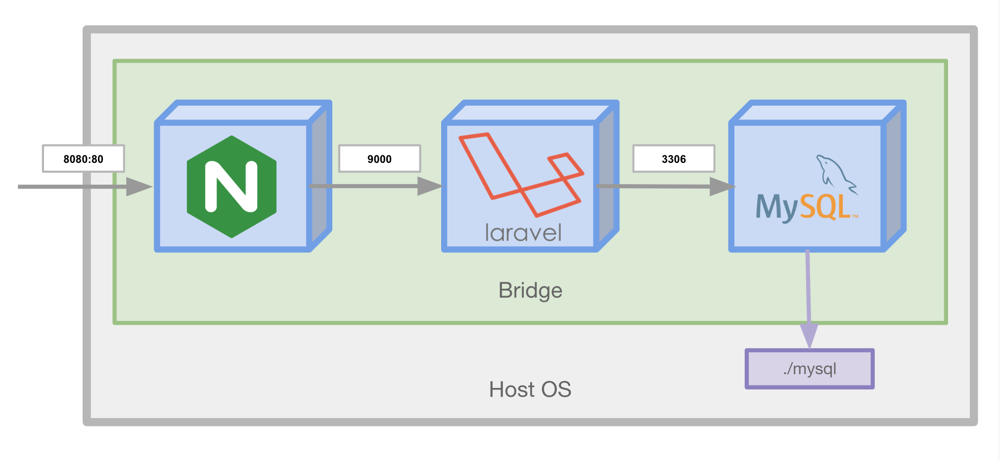

docker-compose
プロジェクトでDockerを使用する際、まず使用するであろうdocker-composeを紹介します。
概要¶
docker-composeはローカルでDockerのオーケストレーションを行うためのツールです。
DockerのビルドからNetworkやVolumeの管理をコードベースで定義して行ってくれます。
nginxを立ち上げるサンプル¶
docker-composeはDockerの構成をyamlを定義し、そのyamlを元に起動します。
例えばnginxを起動し、ホストの8080ポートへコンテナの80ポートをフォワードする設定は以下のyamlになります。
version: '3.7' services: nginx: image: nginx ports: - 8080:80
docker run -p 8080:80 nginx とほぼ同じ動きをします(異なる点としては、docker-composeでは専用のNetworkを作成・使用する点です)。
単純なnginxの起動であれば素のdockerコマンドで問題ありませんが、ここにPHP, MySQL...と増えていくとその威力を発揮します。
Laravelのサンプルを元に学ぶ¶
 雰囲気を知るために上記のような3つのコンテナを協調させて動かしてみましょう。
1. Laravelをdocker-composeで起動する¶
$ git clone https://github.com/y-ohgi/introduction-docker.git $ cd introduction-docker/handson/laravel $ docker-compose up
Play with Docker上へポートが公開されるので、ブラウザで確認してみましょう。
2. docker-compose.yamlを読む¶
起動したLaravelリポジトリのDockerfileをもとに、docker-compose.yamlの書き方を学びましょう。
version: '3.7' services: nginx: build: context: . dockerfile: docker/nginx/Dockerfile volumes: - ./public:/var/www/html/public:ro ports: - 8080:80 environment: PHP_HOST: app app: build: context: . dockerfile: Dockerfile env_file: - .env.example # volumes: # - .:/var/www/html:cached mysql: image: mysql:5.7 volumes: - ./mysql:/var/lib/mysql:delegated command: mysqld --character-set-server=utf8mb4 --collation-server=utf8mb4_general_ci environment: MYSQL_ALLOW_EMPTY_PASSWORD: 'yes' ports: - 13306:3306
version¶
docker-composeのバージョンを指定します。
特にこだわりがなければ最新のものを記述するようにしましょう。
version: '3.7'
services¶
起動するコンテナの定義を行います。
このdocker-compose.yamlでは nginx , app , mysql の3つが定義されています。
services: nginx:
image¶
コンテナを起動するDocker Image を指定します。
image: mysql:5.7
build¶
docker buildの実行情報を記述します。
ここで定義された情報を元にDockerをビルドし、そのビルドしたイメージ使用してコンテナを起動します。
image もしくは build どちらかを記述する必要があります。
コマンドの場合、 docker build -f docker/nginx/Dockerfile . と同一です。
build: context: . dockerfile: docker/nginx/Dockerfile
volumes¶
ボリュームのマウントを行います。
コマンドの場合、 -v $(pwd)/public:/var/www/html/public:ro <IMAGE ID> オプションと同一です。
volumes: - ./public:/var/www/html/public:ro
ports¶
ポートの開放を行います。
左にホストのポートを、右にコンテナのポートを指定します。
コマンドの場合、 -p 8080:80 オプションと同一です。
ports: - 8080:80
environment¶
起動するコンテナへ環境変数を定義します。
コマンドの場合、 -e PHP_HOST=app オプションと同一です。
environment: PHP_HOST: app
env_file¶
ファイルに定義された環境変数を読み取り、コンテナへ定義します。
env_file: - .env.example
command¶
Dockerfileで定義されている CMD の上書きを行います。
command: mysqld --character-set-server=utf8mb4 --collation-server=utf8mb4_general_ci
docker-composeのコマンド¶
up¶
カレントディレクトリに存在する docker-compose.yaml を参照してdocker-composeの起動
$ docker-compose up
終了させるには Ctrl + c
down¶
カレントディレクトリの docker-compose.yaml に紐付いているContainerとNetworkを削除
$ docker-compose down
Imageも削除
$ docker-compose down --rmi all
rm¶
Volumeを削除
$ docker-compose rm
Dockerで立ち上げたMySQLを使用する
Docker/docker-composeで立ち上げたMySQLコンテナにアクセスすることはもちろん可能です。
ここではCLIでの接続の仕方を2種類紹介します。
パターン1 . 立ち上げたMySQLコンテナを利用して接続する
$ docker-compose up -d
$ docker-compose exec mysql mysql
パターン2 . ホストPCからMySQLコンテナへアクセスする。
$ apk add --no-cache mysql-client
$ mysql -h 127.0.0.1 -P 13306
ここで改めてDockerネットワークを振り返ってみると面白いかも知れません。